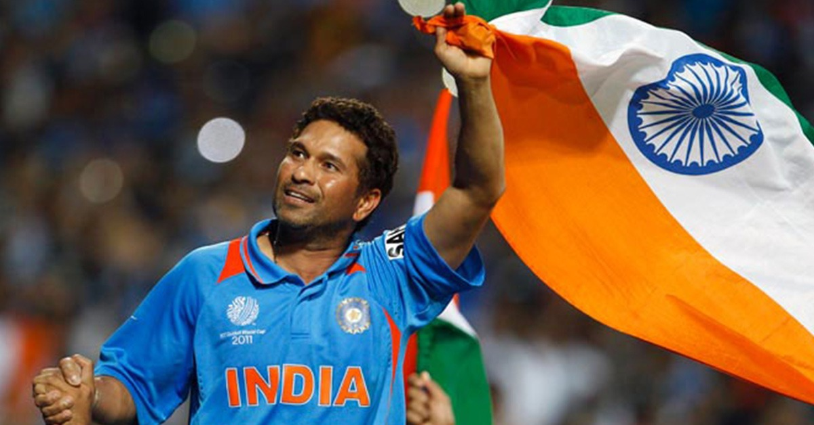

Sachin Tendulkar

God of Cricket
About him:
1. Extraordinary Career: Sachin Tendulkar's career spanned 24 years, during which he showcased exceptional talent, consistency, and dedication to the game of cricket.
2. Record-Breaking Achievements: Tendulkar shattered numerous records, including being the highest run-scorer in Test and ODI cricket, with a remarkable tally of 15,921 Test runs and 18,426 ODI runs.
3. Masterful Batting: Tendulkar's batting technique was a sight to behold. His wide array of strokes, impeccable timing, and ability to dominate any bowling attack made him a formidable batsman.
4. Inspirational Role Model: Sachin Tendulkar's humble demeanor, unwavering dedication, and love for the game made him an inspiration for aspiring cricketers and fans worldwide.
5. Nation's Pride: Tendulkar carried the hopes and dreams of a cricket-crazy nation on his shoulders. His performances on the field often brought joy and pride to millions of fans.
6. Unforgettable Milestones: Tendulkar achieved several memorable milestones, including scoring 100 international centuries, a feat that demonstrated his extraordinary batting prowess and determination.
7. World Cup Glory: Tendulkar played a pivotal role in India's victory in the 2011 ICC Cricket World Cup, fulfilling a lifelong dream and uniting the nation in celebration.
8. Philanthropic Contributions: Beyond his cricketing achievements, Tendulkar's philanthropic efforts, such as supporting education, healthcare, and children's welfare, showcase his commitment to making a positive impact on society.
9. Bharat Ratna: Tendulkar's contributions to Indian cricket and his impact on the sport earned him the Bharat Ratna, India's highest civilian award, further solidifying his status as a national hero.
10. Enduring Legacy: Sachin Tendulkar's legacy as a cricketer and a gentleman of the sport will continue to inspire generations to come, ensuring that his name remains etched in the annals of cricketing history.
Sachin Tendulkar's remarkable career, achievements, and his impact on and off the field make him an icon and a true legend of the game